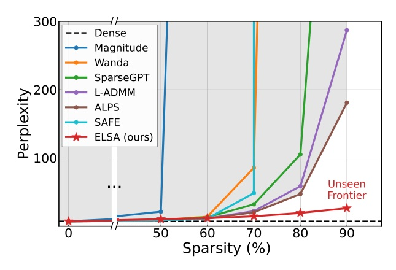
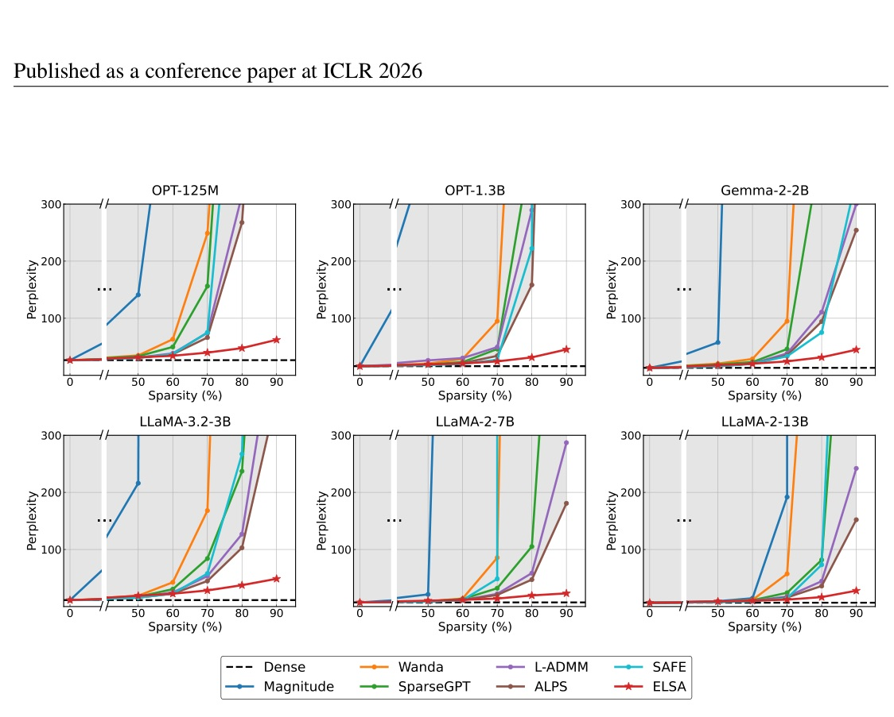
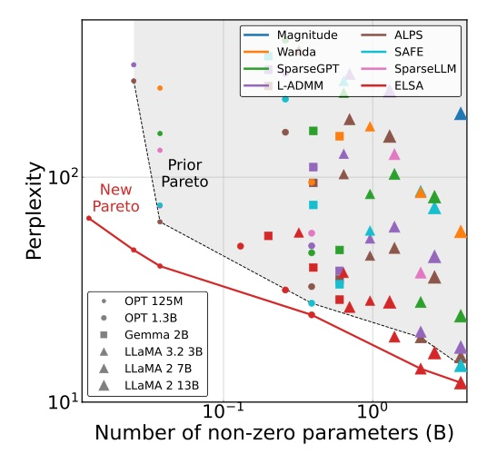
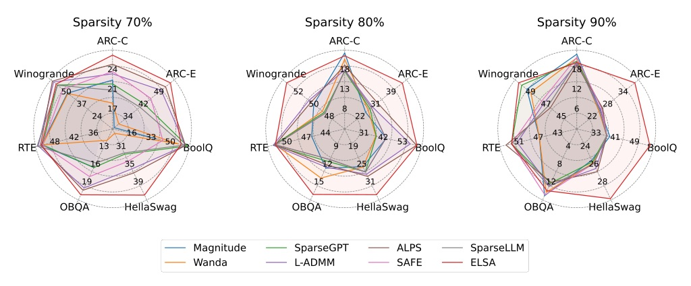
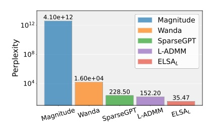
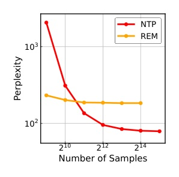

Venue：PDF 每頁頁首「Published as a conference paper at ICLR 2026」· 程式碼 github.com/log-postech/elsa · 選題：今日 arXiv API 429，改以 web 搜尋兜底，挑 ICLR 2026 accepted 的剪枝論文 · Reviewer 資料：未抓取
剪枝方法卡在 50–60% 稀疏度，問題出在「逐層重建誤差」這個代理目標。ELSA 改用 ADMM 直接最佳化真正的語言模型 loss，在 LLaMA-2-7B 90% 稀疏下，C4 perplexity 比過去最好的方法低 7.8×；在 95% 稀疏度下，吞吐提升 3.98×、記憶體減少 7.80×。

| 步驟 | 更新式 | 實際做法 |
|---|---|---|
| x-update (7) | argmin f(x) + λ/2‖x − zt + ut‖² | 用 Adam 跑梯度步，loss 外加一個把 x 拉向稀疏 z 的 proximal 項 |
| z-update (8) | ΠS(xt+1 + ut) | 閉式解：把 d−k 個最小的元素歸零 |
| u-update (9) | ut+1 = ut + xt+1 − zt+1 | 對偶變數做一步梯度上升，累積 x 與 z 的差距 |
超參數：每 32 個 step 做一次 ADMM 投影；λ 在 70–90% 稀疏度時從 0 以 cosine 排程升到目標值；資料 32,768 條 × 2048 tokens（Tab.4、B.2）。
| 稀疏度 | Euclidean 投影 | Objective-aware 投影 |
|---|---|---|
| 70% | 29.44 | 28.24 |
| 80% | 40.06 | 37.50 |
| 90% | 65.41 | 48.69 |
LLaMA-3.2-3B perplexity（越低越好）。差距：70% 時 1.20 → 80% 時 2.56 → 90% 時 16.72。
這是非凸問題的局部穩定性保證，不是全域最優保證。

OPT-125M：SparseGPT 從 60% 時的 49.83 升到 80% 時超過 1,000；ELSA 只從 42.99 升到 47.45（§5.1）。
| 方法 | 70%（Wiki / C4） | 80% | 90% |
|---|---|---|---|
| Wanda | 76.32 / 81.08 | 4096 / 2673 | 2.0e4 / 1.0e4 |
| SparseGPT | 27.12 / 30.94 | 107.3 / 100.8 | 1430 / 864.5 |
| L-ADMM | 20.56 / 22.20 | 60.78 / 58.63 | 400.5 / 287.1 |
| ALPS | 19.39 / 20.37 | 48.43 / 47.22 | 248.8 / 180.9 |
| ELSA | 13.20 / 14.08 | 20.83 / 19.56 | 26.97 / 23.14 |
Dense：5.47 / 7.26。180.9 ÷ 23.14 ≈ 7.8×，即摘要中「7.8× less perplexity」的出處。


| 稀疏度 | Wanda + LoRA | Wanda + Full FT | ELSA |
|---|---|---|---|
| 90% | 92.66 / 65.56 | 42.40 / 34.87 | 26.97 / 23.14 |
| 95% | 371.0 / 143.0 | 84.30 / 53.62 | 38.91 / 28.39 |
| 99% | 588.3 / 247.5 | 146.37 / 71.64 | 55.94 / 40.10 |
LLaMA-2-7B Wiki / C4 perplexity；baseline 的再訓練使用與 ELSA 相同的資料量，超參數各自調整（B.3）。
| 稀疏度 | Latency (s) | Tokens/s | 記憶體 (MB) |
|---|---|---|---|
| Dense | 1.84 | 54.47 | 13596 |
| 50% | 1.37 (1.34×) | 72.81 (1.33×) | 8870 (1.53×) |
| 70% | 0.95 (1.94×) | 104.89 (1.93×) | 5603 (2.42×) |
| 90% | 0.72 (2.50×) | 139.47 (2.56×) | 2918 (4.60×) |
| 95% | 0.46 (4.00×) | 216.98 (3.98×) | 1743 (7.80×) |
LLaMA-2-7B 端到端文字生成，單張 RTX 3090。decode 階段以 sparse matrix–vector 運算為主，稀疏帶來的好處最明顯（§5.3）。

| 方法 | Wall-clock (h) | #GPU | Wiki / C4 |
|---|---|---|---|
| Wanda | 0.159 | 1 | 2.0e4 / 1.0e4 |
| SparseGPT | 0.251 | 1 | 1430 / 864.5 |
| ALPS | 12.57 | 1 | 248 / 180.9 |
| Wanda + LoRA | 4.03 | 1 | 92.66 / 65.56 |
| Wanda + Full | 1.64 | 4 | 42.40 / 34.87 |
| ELSA | 1.78 | 4 | 26.97 / 23.14 |
A100-80GB，LLaMA-2-7B，90% 稀疏度。逐層方法省記憶體，但在高稀疏度下，多花算力並不會換來相應的品質。
| LLaMA-3-8B，70% | Wiki | C4 |
|---|---|---|
| SparseGPT | 85.84 | 98.35 |
| OWL | 48.07 | 52.32 |
| EvoPress | 28.76 | 33.72 |
| ELSA（EvoPress mask） | 26.11 | 29.33 |
| ELSA（uniform） | 24.97 | 29.09 |

此頁為編者推論，已與論文內容分開標示。
We argue, however, that this “sparsity wall” is perhaps not an inherent limitation but rather an artifact of ill-defined problem formulation.
然而我們認為，這道「稀疏牆」或許並非內在限制，而是問題定義不當所造成的假象。§2, p.3
its reliance on a surrogate objective implies that one cannot expect to obtain a solution on (1) even after perfectly solving (2).
依賴代理目標意味著，即使完美解出 (2)，也不能期待得到 (1) 的解。§2, p.3
We found that using Diag(H) allows us to retain this simplicity while still keeping the benefits by zeroing the entries with the smallest contribution to the objective rather than by their magnitudes.
我們發現，使用 H 的對角近似可以保留逐座標投影的簡單性，同時依「對目標函數的貢獻」而非權重大小來決定歸零哪些元素。§3.2, p.4
the standard Adam optimizer has already made F̂ available for free via its second-moment estimates
標準 Adam 的二階動差估計已經免費提供了 F̂。§3.2, p.5
來源：arXiv 2510.01650 · ICLR 2026 · 程式碼 github.com/log-postech/elsa